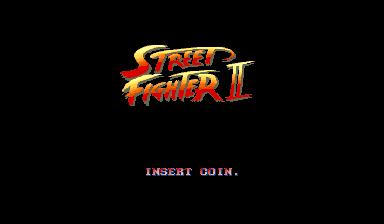
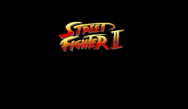
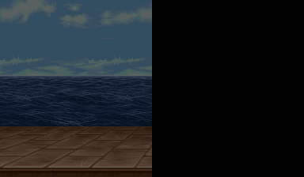
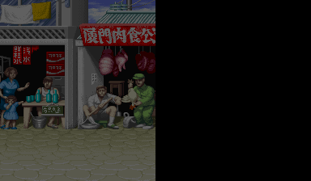
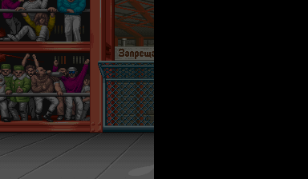
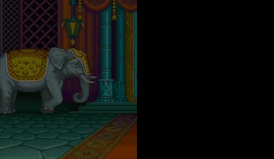
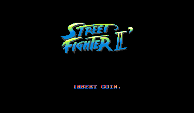
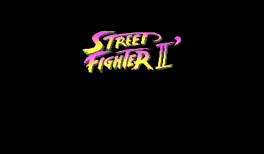

This article is part of a series about Street Fighter II and the CPS-1. It is recommended to read the previous entries before reading this one.
As we have seen in the previous entries, the hardware running Street Fighter 2 is a tile engine that can only flip a tile vertically and/or horizontally with no blending capability. This was a problem for a game like Street Fighter II where the attract mode involves spinning the logo, scaling it up, while displaying a translucent "World Warrior" text underneath.
If you were around in 1991, you may remember the effect was weird but it was difficult to tell what since it was spinning so fast and the CRT blurred things quite a bit.
A recreation of the attract mode "spin and zoom".
Via the sheet explorer, we can look at the GFXROM. The tiles used for the logo can be found in sheet 0x8200.
As expected we find two versions of the artwork, a small one and a large one. But how did they use them?
Thanks to modern technology, we can slow down the animation. Mame can record a pixel perfect image sequence in mng format to let us look at each frame separately.
$ mame sf2 -mngwrite sf2.mng
By moving the slider left and right, we can establish that:
If they win the tournament without losing a round, the player is treated with a special credit sequence where more scaling and rotation occur. Again with the help of Mame we can peek at what is happening in slow-motion.
Screen1 :
Here, scaling up is performed by "stacking" tile on top of each others and progressively spreading them.
Screen2 :
Trivia: Notice how the fighters sprites appear one frame after the background. This is because the CPS-1 uses a sprite framebuffer that delays the sprite layer update by one frame.
Screen3 :
Screen4 :
One year later, in March 1992, Capcom released a much improved version called "Champion Edition". To this occasion the attract mode was revamped. The logo does not spin anymore but it fake-scales both down and up.
The switch between small logo and big logo is hidden when all tiles are concentrated in a single point. The visual is much more compelling than the SF2:WW effect.
The last game to be released on CPS-1 (after which Capcom moved to CPS-2), Street Fighter 2 Hyper-Fighting, was released in December 1992.
The attract mode was not changed much besides the text. The text animation was removed altogether, with only the logo scaling remaining.
One year after the arcade release, Capcom published a Super Nintendo port on Jul 15, 1992. They did a superb job, managing to have all the characters, moves and beautiful GFX despite using a game console with less capacity and lower resolution.
Amazingly they managed to render a better spinning effect thanks to the SNES Mode 7 + HDMA.
For the subtitle translucency, a simple dithering with a sprinkle of wobbling did the trick.
Once again, thanks to Mame, the whole animation can be inspected on a frame by frame basis.
$ mame snes -cart "sf2.zip" -mngwrite sf2snes.mng